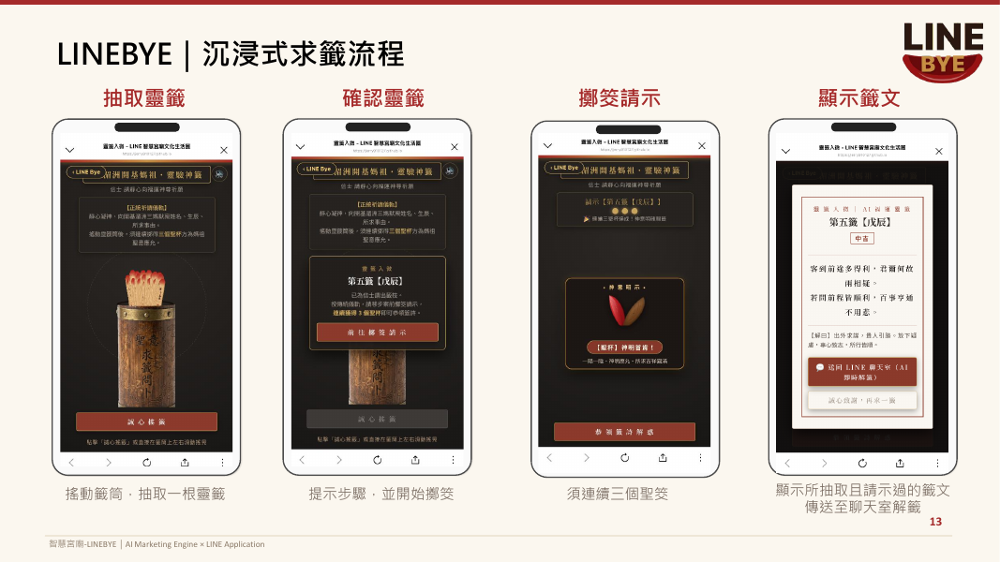
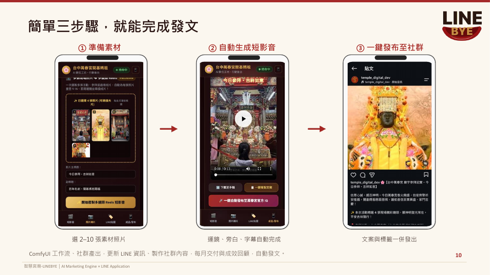

Champion, 2026 LINE AI Innovation & Entrepreneurship Competition
LINEBYE Smart Temple
Overview
LINEBYE is the project my teammate Wang Yen-Po and I built as team "LINE Fun Temple" for the 2026 LINE AI Innovation & Entrepreneurship Competition, where it won the Championship. The judges particularly recognized its completeness and feasibility.
Temples have rich stories and loyal worshippers, yet Q&A, lamp-lighting registration and event notifications are still largely handled manually, and young visitors tend to leave right after worshipping. LINEBYE brings temple services into LINE, turning a one-time visit into an ongoing conversation: worshippers can draw fortune slips, light prayer lamps and ask questions from home, while temples can generate social media content automatically with AI. The prototype uses Wanchun Temple in Taichung as its proposed pilot site; no formal partnership has been established yet.
I was responsible for the overall system architecture, page structure and feature design.
Tech Stack
- LINE Official Account + Messaging API: AI replies, and push messages that send fortune-slip and check-in results back to the chat
- Rich Menu: a six-tile menu giving one-tap access to each service
- LIFF / LINE MINI App: fortune-slip drawing, lamp lighting, meditation and the walking tour open inside LINE
- LINE Login (ID token): server-side user authentication with LINE
- Large language models and vision models: assistant Q&A, AI fortune-slip interpretation and image recognition
- ComfyUI workflows: generating 16 Mazu LINE stickers and automatically producing short videos and posts
How It Works
- Onboarding and Rich Menu: After adding the temple's Official Account as a friend, worshippers use the six-tile menu to open online fortune slips, mindfulness meditation, the "Lanxing Mystery" puzzle tour, prayer-lamp lighting, the member center and the main hall home page.
- Immersive fortune-slip drawing: On a LIFF page, users shake the fortune-stick container to draw a slip and must cast three consecutive affirmative moon blocks (sheng bei) before receiving it. The slip is then sent back to the chat.
- AI assistant: Available 24/7, the assistant answers questions about worship procedures, deities and events in the temple's own tone. It interprets fortune slips sent as text or photos, and recognizes photos of fortune slips, deity statues and amulets to explain their cultural meaning. The webhook acknowledges each request immediately and generates the answer in the background, with predefined answers to frequently asked questions serving as an instant fallback. AI replies are labeled as cultural interpretations.
- AI-generated social media content: Temple staff select 2–10 photos, and the system automatically adds camera motion, voice-over and subtitles to produce a short video, then publishes it to social media together with the caption and hashtags in one click.
- City puzzle tour and stickers: The "Lanxing Mystery" leads worshippers through the neighborhood to solve clues and learn the temple's history. The Mazu stickers generated with ComfyUI are automatically background-removed, captioned and packaged to LINE's sticker specifications, and are free to download after adding the account as a friend.
Planned features include LINE Beacon push notifications, on-site check-in with LINE Touch and payment with LINE Pay (shown as demo flows in the prototype). Publishing the stickers and any co-branding require authorization from the temple.
Screenshots





Reflections
This competition taught me that AI features get used only when they live where users already are. Temple worshippers span every age group, and nearly all of them use LINE, so we designed every service to run inside LINE. From adding the account to engaging and returning, users never need to download a separate app.
While designing the AI replies, I also realized that being able to answer is not enough. Because generation takes time, the webhook responds first and produces the answer in the background, with fallback replies prepared for common questions; fortune-slip interpretations are also clearly labeled as cultural interpretations. These details are what make the project usable in practice rather than just a demo.